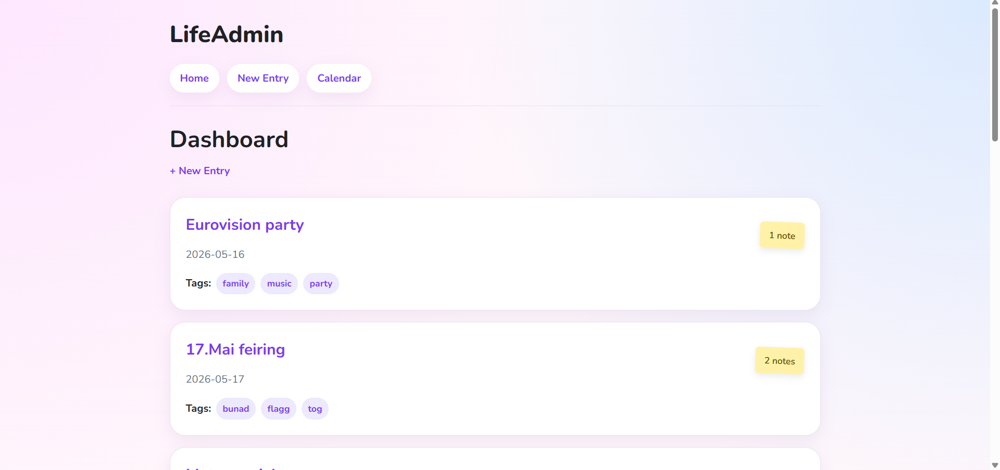
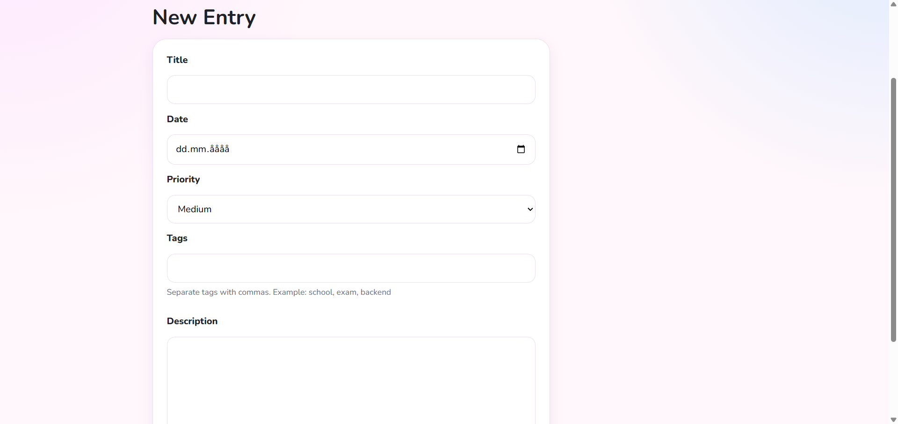
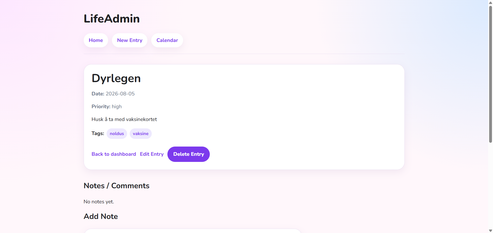
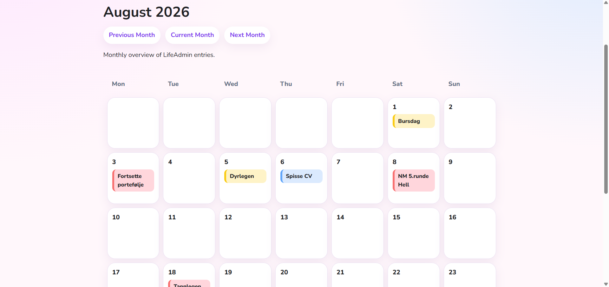
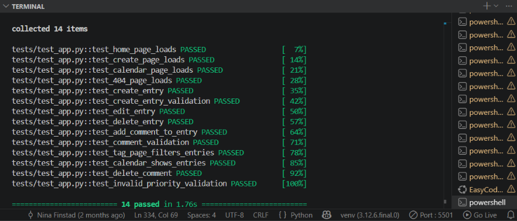

Eksamensprosjekt · Backend Essentials
LifeAdmin
LifeAdmin er en webapplikasjon for å samle avtaler, oppgaver og annen informasjon på ett sted. Ideen oppstod fordi jeg ønsket en enkel løsning som kunne gi bedre oversikt over alt som må huskes i hverdagen.
Jeg utviklet LifeAdmin som eksamensprosjekt i Backend Essentials. Oppgaven åpnet for å utvikle en egen løsning innenfor de samme backendkravene som en tradisjonell blogg. Det ga meg mulighet til å lære gjennom en idé jeg selv var motivert for å utforske.

Prosjektoversikt
Læring gjennom praktisk backendutvikling
I prosjektet fikk jeg utforske hvordan Python, Flask og SQLite kan brukes til å bygge en databasebasert webapplikasjon. Jeg arbeidet blant annet med funksjoner for å opprette, vise, redigere og slette innhold, samt validering, testing og visning av dynamisk innhold.
Underveis brukte jeg KI aktivt som sparringspartner for å forstå kode, finne feil og komme videre når jeg stod fast. Jeg testet forslagene, gjorde tilpasninger og jobbet steg for steg for å forstå hvordan de ulike delene av løsningen hang sammen. Prosjektet ga meg lyst til å lære mer om utvikling og hvordan teknologi kan brukes til å gjøre en idé om til en praktisk løsning.
01 · Løsningen
Løsningen i praksis
Brukeren kan opprette, vise, redigere og slette oppføringer, angi dato og prioritet, organisere dem med tags, legge til notater og se oppføringene i en kalender.




02 · Testing og kvalitet
CRUD: opprette, vise, redigere og slette
Testene kontrollerer de viktigste handlingene for oppføringer.
Validering
Kontroll av tomme felt og ugyldige verdier
Notater og tags
Legge til og slette notater og filtrere med tags
Sider og kalender
Sjekke at sider, 404-side og kalender virker
Testing av de viktigste funksjonene
Som en del av oppgaven brukte jeg pytest til å sjekke at de viktigste funksjonene virket som de skulle. Testene omfattet både vanlige brukerhandlinger og situasjoner der det ble lagt inn ugyldig informasjon.
03 · Sikkerhet og validering
Kontroll av data og feil
Sikkerhet var en del av oppgaven. Jeg arbeidet derfor med grunnleggende tiltak for å kontrollere det brukeren skriver inn, beskytte databasen og håndtere sletting på en ryddig måte.
Det brukeren skriver inn, behandles som innhold og ikke som kommandoer som kan endre databasen.
Løsningen kontrollerer blant annet at nødvendige felt er fylt ut, og at teksten ikke er for lang.
Når en oppføring slettes, håndteres også notater og koblinger som hører til oppføringen.
04 · Refleksjon
Det jeg lærte
Fra teori til praksis
LifeAdmin ga meg praktisk erfaring med hvordan Python, Flask, Jinja og en database brukes sammen i en webapplikasjon. Gjennom prosjektet fikk jeg bedre forståelse for hvordan de ulike delene påvirker hverandre.
Jeg opplever backend som utfordrende, men også spennende fordi det alltid vil være mer å lære. Jeg likte problemløsningen underveis og kjente på en stor mestringsfølelse da jeg fikk CRUD-funksjonene for å opprette, vise, redigere og slette oppføringer til å fungere.
KI som sparringspartner
Jeg brukte KI aktivt for å forstå syntaks og feilmeldinger, diskutere mulige løsninger og komme videre når jeg stod fast.
En viktig erfaring var at forslagene alltid måtte vurderes i sammenheng med resten av løsningen. Ved å teste, tilpasse og undersøke resultatene lærte jeg å bruke KI som en sparringspartner og ikke som en fasit.